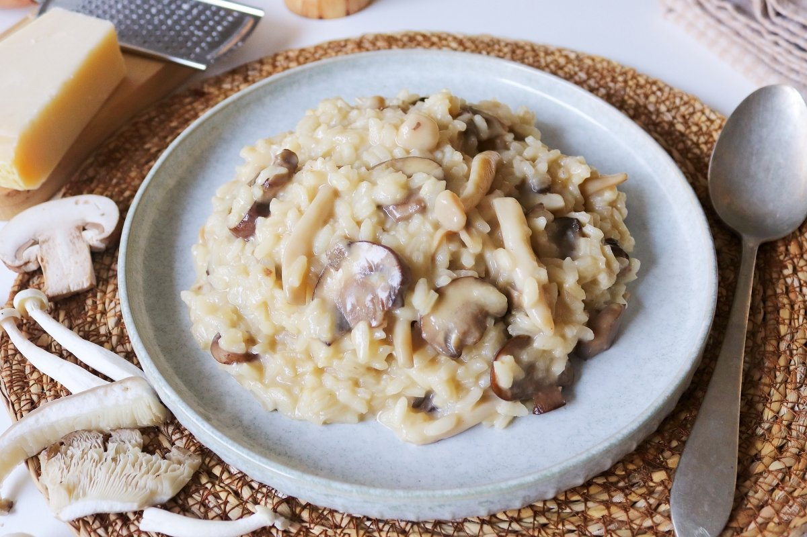

Finished mushroom risotto, adressed with parmesan cheese.
What can I say about this clasic dish, I just love italian cooking. I like rice, I like cheese, and I like mushrooms, and this dish lets all those ingredients shine.
The key for this recipe is to be patient, let the rice take its time to absorb all the flavours and get that signature creamy texture of the risotto.
Let's get started with this.
INGREDIENTS
40g butter
Half an onion
250g mushrooms, clean and chopped
350g risotto rice
200ml white wine
1L chicken (or vegetable) broth
100g parmesan cheese
UTENSILS
A big frying pan
Whatever can stir the ingredients and doesn't scratch the pan
Grater
PREPARATION
Throw the butter in the pan at low heat.
Chop the onion in small pieces, then cook them with the butter until transparent.
Throw the mushrooms in the pan and cook them for around 5 mins at medium heat.
Add the rice into the pan and mix it so it captures all the flavours.
Pour the wine and wait until it evaporates.
Pour the broth little by little as the rice absorbs it, with the help of a ladle or a glass.
It's important that the broth is very hot when we add it, so the rice keeps on cooking.
This can take up to 20 mins, so be patient, and keep on stirring.
When the rice is done, turn off the heat and add the grated parmesan cheese. Stir until mixed.
Finally serve and enjoy!
When you order a risotto in a restaurant, it may seem like a complicated dish to make from the outside. In reality it just takes around 40 mins and a bit of patience.
Even then, I messed up big time this recipe the first time I tried it.
Long story short, I was drinking with my girlfriend while cooking, and mixed the broth with my vodka drink. Ended up cooking the rice with vodka.
For no ones surprise, it tasted horribly. Hope you don't make your risotto slavic style while following this recipe.
Stay tuned!